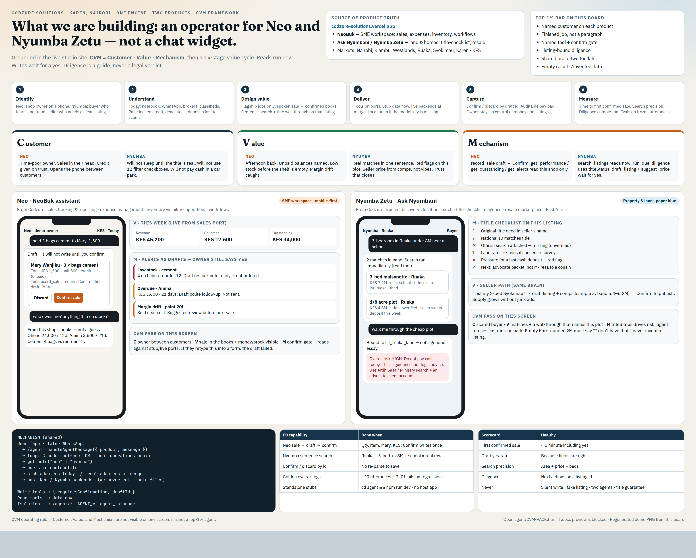

Codzure Solutions · Karen, Nairobi · Open this HTML or the PDF — Word .docx is a binary and will not preview in Cursor/GitHub.
Source of product truth: codzure-solutions.vercel.app
CVM framework: Customer · Value · Mechanism, run as a six-stage cycle (Identify → Understand → Design value → Deliver → Capture → Measure). If we cannot name all three pillars on one screen, we are building a chat widget, not a top-1% agent.

Figure 1. Dual-product CVM demo board (also demo.html).
We do not win by wrapping a language model in a text box. We win if the agent finishes a job the user already pays for with time, cash, or fear — then waits for a yes before anything important is saved.
| Product | Job that matters | Average if we miss it |
|---|---|---|
| Neo · NeoBuk | “Sold 3 bags cement to Mary, 1,500” → structured draft; “who owes me?” from this shop | Chatbot that talks about bookkeeping |
| Nyumba Zetu · Ask Nyumbani | “3-bed Ruaka under 8M near a school” → real listings; title fear → walkthrough on that listing | Listings FAQ bot |
| Pillar | Question | Pass test |
|---|---|---|
| C — Customer | Whose job, in their words, on their phone, in Kenya? | Named person, workaround, fear or cost they already pay |
| V — Value | What finished job do they walk away with? | Confirmed action or grounded answer — not a fluent paragraph |
| M — Mechanism | How without breaking trust? | Named tool, port, confirm-before-write, honest “I don’t know” |
| Stage | Neo | Nyumba Zetu |
|---|---|---|
| 1 Identify | Hardware/retail SME owner | Buyer/seller in Nairobi–Kiambu belt |
| 2 Understand | Notebook + WhatsApp + memory | Portals, brokers, Facebook; fraud fear |
| 3 Design | Spoken sale → draft → confirm | Sentence search + listing-bound title checklist |
| 4 Deliver | record_sale, outstanding, alerts | search_listings, run_due_diligence |
| 5 Capture | Owner taps Confirm | Next actions; never cash in a car park |
| 6 Measure | Time to first confirmed sale | Search precision; diligence completion |
NeoBuk: sales tracking & reporting, expense management, inventory visibility, operational workflows. Ask Nyumbani: trusted property discovery, location-based search, land visibility with title-checklist guidance, curated resale marketplace. Markets: Nairobi, Kiambu, Westlands, Ruaka, Syokimau, Karen. Currency KES. Studio: practicality first, mobile-first, African market realities.
P0: Neo sale → draft → confirm; Nyumba sentence search; confirm/discard by id; golden evals + logs; standalone /agent on stubs.
P1: Diligence bound to a listing; Neo performance + outstanding + alerts-as-drafts; seller listing + comps.
P2 only after P0 is boring: WhatsApp, official lands-search partnership, voice notes.
Never: silent writes, title guarantees, two agent stacks, invented listings, auto-chasing customers without confirm.
User → handleAgentMessage → LLM tool loop or local operations brain → getTools("neo"|"nyumba") → ports in contract.ts → stubs now / real adapters at merge. Isolation: nothing outside /agent. Merge is one registerAgent call.
| Metric | Healthy |
|---|---|
| First confirmed Neo sale | Under a minute including yes |
| Draft confirmation | Yes because the draft is right |
| Search | Area + price + beds |
| Diligence | Next actions on a listing id |
| Empty results | “I don’t have that” — never invent |
Full narrative: BUSINESS_CASE.md · Board: demo.html